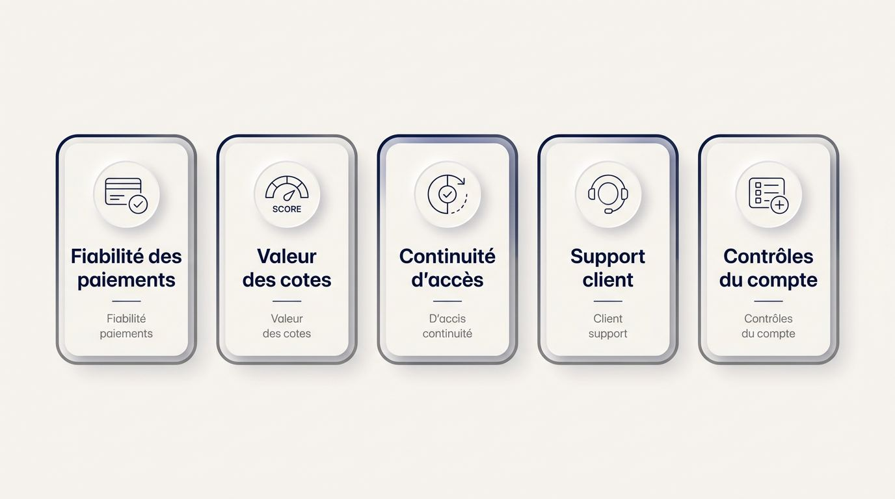
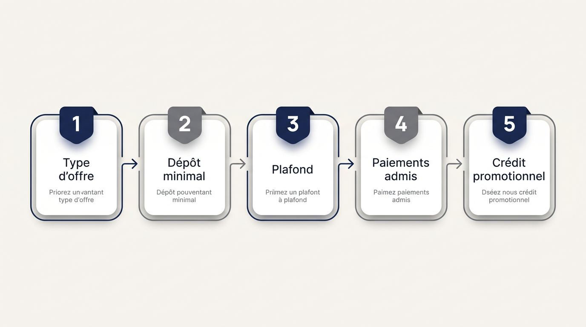

Choisissez un bookmaker crypto capable de recevoir l’actif et le réseau que vous utilisez, puis de restituer vos gains dans des conditions vérifiables. Depuis la France, les écarts entre plateformes touchent les frais, les plafonds, les cotes, le niveau de vérification et la protection du compte. Un retrait incertain ou un portefeuille incompatible peut annuler l’intérêt d’un bonus élevé.
Cette sélection est régulièrement révisée et mise à jour.
Comparatif des offres disponibles
Les offres sont chargées automatiquement depuis la source du comparatif.
Comment comparer un bookmaker crypto depuis la France
Un comparatif crédible évalue la fiabilité des paiements, la valeur des paris, la continuité d’accès, le support client et les contrôles du compte. Pour choisir un bookmaker crypto fiable, vous devez relier ces preuves à votre usage réel des sites de paris, sans répéter des avis individuels. Le cadre suit une logique précise, du score de risque et de valeur aux licences, puis à la localisation et aux motifs d’exclusion.

Un score de risque et de valeur adapté à la France
L’option la plus attractive n’est pas forcément celle qui affiche le bonus le plus élevé ou le plus grand choix de crypto monnaies. La valeur conservée sur le long terme dépend des cotes, des frais, des limites, de la vérification et de l’accès effectif à vos gains.

L’ANJ, ou Autorité nationale des jeux, encadre les opérateurs autorisés localement. Les plateformes internationales appliquent leurs propres licences et règles de compte. Le cash-out crypto et la vérification KYC peuvent donc modifier l’usage quotidien du solde sans déterminer seuls le classement. Pour une recherche comme « best crypto bookmaker », ces critères vérifiables comptent davantage qu’une simple promesse commerciale.
| Critère pondéré | Ce qui est évalué | Effet concret pour vous |
|---|---|---|
| Valeur des cotes | Cotes sur des marchés identiques, marges et limites | Montant potentiel de gains conservé à mise égale |
| Fiabilité des retraits | Politique de paiement, plafonds et preuves de retraits | Disponibilité réelle de vos fonds |
| Juridiction de licence | Recours publiés, transparence et règles de paiement | Possibilités de contestation en cas de litige |
| Continuité depuis la France | Communication lors de changements de domaine ou d’accès | Stabilité d’accès à votre compte |
| Support en français | Réponses, horaires et précision des conditions | Résolution plus simple d’un blocage ou d’une question |
| Contrôles de compte | Limites, outils de sécurité et options de restriction | Maîtrise de votre activité et de votre solde |
Les tests en argent réel consignent l’actif, le réseau, l’heure du test, le statut KYC, le temps de traitement interne, le temps de confirmation sur la blockchain et l’heure de réception observée. Cette méthode distingue les promesses d’interface de la fiabilité des retraits démontrée.
Licence, réclamations et protection des fonds
Une licence compte surtout lorsqu’un retrait en cryptomonnaie, une fermeture de compte ou une réclamation exige un interlocuteur et une procédure identifiables. Un logo seul ne vous renseigne pas sur les voies de contestation ni sur le traitement des fonds des joueurs.
La blockchain est un registre de transactions partagé et vérifiable. Elle permet de suivre un mouvement d’actifs, sans imposer à un opérateur de traiter équitablement une réclamation. Une preuve de réserves peut indiquer des actifs divulgués, mais elle ne prouve pas indépendamment qu’un site honorera chaque retrait individuel.
| Élément à comparer | Licence de Curaçao | Malta Gaming Authority |
|---|---|---|
| Réclamation publiée | Vérifiez l’existence d’un canal précis et les coordonnées du titulaire | Vérifiez les mécanismes de plainte et d’escalade publiés |
| Différend avec le joueur | La procédure dépend des conditions de l’opérateur et de sa structure | Les exigences de transparence et les voies de recours sont généralement plus formalisées |
| Fonds des joueurs | Recherchez une mention explicite de ségrégation des fonds | Examinez les règles publiées sur la protection et le traitement des fonds |
| Retraits | Contrôlez les plafonds, délais internes et motifs de suspension | Contrôlez les mêmes éléments dans les conditions de paiement |
| Société exploitante | Exigez une raison sociale, une adresse et une licence vérifiable | Vérifiez que les informations de société correspondent au titulaire de la licence |
Une licence de jeu d’un opérateur crypto mérite donc un contrôle documentaire. Recherchez les coordonnées de la société, les conditions de jeux, les règles de paiement et une procédure d’escalade accessible avant de déposer.
Vérifier la localisation et le support en français
La disponibilité du français devient un signal de qualité si les conditions de retrait, les explications KYC et les réponses du support restent exactes et utilisables. Une interface partiellement traduite oblige souvent les joueurs à consulter une version étrangère des règles au moment d’un litige.
Avant d’alimenter un compte, effectuez ces contrôles :
- Vérifiez que le centre d’aide français couvre les dépôts, retraits, bonus et contrôles de sécurité du compte bookmaker.
- Lisez les conditions de retrait dans leur version française et comparez-les avec les règles générales accessibles sur le site.
- Envoyez une question précise au support client, par exemple sur un plafond de retrait ou le traitement d’un document.
- Confirmez que les horaires d’assistance correspondent à l’heure d’Europe centrale.
- Écartez les explications KYC opaques, les traductions incohérentes et un support annoncé en français qui répond dans une autre langue.
Les signaux qui doivent faire écarter un opérateur
Vous devez écarter un opérateur dès que ses règles de dépôt ou de retrait ne peuvent pas être vérifiées avant l’envoi des fonds. Ces indices touchent directement votre portefeuille, vos gains et l’accès à votre compte.
- Limites de retrait opaques : des plafonds absents ou contradictoires peuvent immobiliser vos gains après un pari gagnant.
- Frais de retrait crypto non publiés : une politique de frais imprécise empêche d’évaluer la valeur nette récupérable.
- Licence invérifiable : une référence sans titulaire identifiable ni procédure de réclamation laisse peu de moyens de contrôle.
- Conditions modifiables sans communication claire : des règles modifiées pendant une demande de retrait créent un risque de contestation difficile.
- Absence d’authentification à deux facteurs : cette faiblesse importante expose davantage vos identifiants, votre solde et les changements d’adresse de portefeuille.
- Communication défaillante lors d’une perturbation d’accès : un site qui ne donne aucune information pendant un changement de domaine rend l’accès aux fonds incertain.
- Support imprécis : des réponses automatiques ou contradictoires avant tout dépôt annoncent souvent une résolution difficile par la suite.
Paiements crypto, réseaux et valeur réelle des retraits
Un dépôt en cryptomonnaie direct peut réduire les étapes de conversion, mais la valeur récupérable dépend encore de l’actif, du réseau, des frais, du statut KYC et des plafonds. Le délai affiché combine parfois deux étapes distinctes, le contrôle interne de l’opérateur et les confirmations sur la blockchain. Votre portefeuille crypto pour paris sportifs doit donc rester compatible avec la route de paiement retenue.
Dépôt crypto direct ou conversion en euros
Un dépôt crypto direct depuis votre portefeuille vers une plateforme de paris et une conversion crypto en euros pour parier offrent des niveaux différents de contrôle, de coûts visibles et de dépendance à des intermédiaires. Votre choix doit correspondre à la manière dont vous détenez déjà vos actifs.
Un portefeuille crypto conserve les moyens d’accéder à vos actifs numériques. Dans un portefeuille non custodial, vous détenez les clés privées. Dans un portefeuille custodial, un service conserve l’accès et applique ses propres contrôles.
| Route de financement | Friction | Contrôle | Coûts visibles |
|---|---|---|---|
| Dépôt crypto direct | Dépend de la compatibilité de l’actif et du réseau | Élevé avec un portefeuille non custodial | Frais réseau et éventuels frais de dépôt crypto |
| Conversion préalable en euros | Ajoute une opération de change | Partagé avec le service de conversion | Écart de conversion, frais éventuels et frais de paiement |
| Accès par SEPA transfrontalier ou transfert instantané | Dépend du prestataire et des vérifications | Partagé entre banque et intermédiaire | Frais de transfert, conversion et conditions du prestataire |
Les accès par SEPA transfrontalier ou transfert instantané constituent donc une troisième voie, distincte du dépôt direct et de la conversion préalable. Ils réduisent parfois la dépendance à une seule plateforme, tout en ajoutant des contrôles de tiers.
Bitcoin, Ethereum, USDT et Litecoin pour parier
L’actif adapté dépend de votre tolérance aux variations de prix, aux coûts de réseau et à la prise en charge au dépôt comme au retrait. Un bookmaker bitcoin peut accepter le Bitcoin à l’entrée tout en limitant les options de sortie, ce qui modifie la souplesse de vos paris sportifs Bitcoin. La requête « bookmaker crypto monnaie » doit donc être reliée à l’actif, au réseau et aux conditions de sortie réellement disponibles.

Les stablecoins sont conçus pour suivre une valeur de référence. Ils restent exposés à un risque de décrochage de parité et exigent donc aussi une gestion prudente.
- Bitcoin : vérifiez la volatilité du bitcoin, les frais du réseau au moment du mouvement et les plafonds applicables à vos paris en crypto.
- Ethereum : BTC ETH regroupe souvent les actifs les plus visibles, mais les coûts du réseau Ethereum peuvent varier selon la congestion.
- Tether et USDT : l’USDT offre une stabilité relative face aux actifs plus volatils, à condition de contrôler l’émetteur, le réseau accepté et le risque de parité.
- Litecoin : Litecoin peut convenir lorsque la plateforme prend en charge son réseau et sa politique de frais, sans constituer une solution universelle.
- Symétrie des paiements : confirmez que l’actif choisi est disponible pour déposer et récupérer les gains, avec des conditions comparables.
Choisir le bon réseau et anticiper les frais
Le réseau choisi dans votre portefeuille doit correspondre exactement au réseau de dépôt accepté par le site de paris sportif, faute de quoi le transfert peut être retardé ou compromis. Cette compatibilité est aussi importante que le choix de la crypto monnaie elle-même.
Le réseau TRC-20 et le réseau ERC-20 sont des standards de réseau blockchain fréquemment utilisés pour les transferts d’USDT. Ils ne présentent pas les mêmes frais ni les mêmes délais de confirmation selon la congestion et la politique de la plateforme.
- Vérifiez que le réseau blockchain pour dépôt crypto affiché par l’opérateur correspond à celui pris en charge par votre portefeuille.
- Comparez les frais TRC-20 et les frais ERC-20 au moment où vous prévoyez de déplacer des fonds.
- Contrôlez le nombre de confirmations exigé avant que le solde soit crédité ou qu’un retrait soit considéré comme final.
- Consultez la politique du site sur les frais réseau facturés à l’envoi des gains.
- Évaluez le réseau avec l’actif accepté et les règles de retrait, plutôt qu’avec le seul coût apparent du dépôt.
Délais, plafonds et fiabilité des retraits crypto
Un retrait crypto présenté comme rapide n’a de valeur que si le contrôle interne, les plafonds de paiement, les frais réseau et les résultats observés sont documentés. Vous devez distinguer le délai de retrait crypto appliqué par l’opérateur du temps nécessaire aux confirmations blockchain.

La revue interne peut inclure un contrôle de compte, la vérification KYC ou une validation manuelle. La blockchain intervient ensuite lorsque l’opérateur a émis la transaction. Une confirmation rapide ne compense donc pas un traitement interne long ou une limite de retrait restrictive.
Vérifiez les éléments suivants avant de déposer :
- La tranche de montant autorisée par retrait et les plafonds journaliers, hebdomadaires ou mensuels.
- L’actif et le réseau disponibles pour récupérer vos gains.
- La politique de frais et l’identité de la partie qui supporte les frais de réseau.
- La visibilité du règlement lors d’un cash-out et son effet sur une demande de retrait.
- Les preuves de fiabilité des retraits fondées sur des essais réels, avec actif, réseau, tranche de montant, statut KYC, temps de traitement interne et temps de confirmation.
- Les motifs précis qui peuvent suspendre un retrait en cryptomonnaie après une activité de paris crypto.
Condition à confirmer avant dépôt : vérifiez le plafond de retrait, la vérification exigée et le réseau de sortie applicable à l’actif que vous utiliserez pour récupérer vos gains.
Sports, cotes et paris en direct pour les joueurs français
La qualité d’un site de paris sportifs en cryptomonnaie se mesure à la profondeur des marchés, aux prix compétitifs et à une exécution stable sur les sports suivis en France. Le football domine les paris, suivi du tennis, du basket-ball et du rugby. Comparez les cotes sur des marchés équivalents pour mesurer la qualité des paris sportifs en crypto.
Les marchés les plus utiles aux parieurs français
Le football, le tennis, le basket-ball et le rugby s’évaluent par la profondeur des marchés et les prix proposés. Cette vérification devient particulièrement utile autour de la Ligue 1, des compétitions européennes impliquant des clubs français, de Roland-Garros et du Top 14.
Un pari sportif utile offre plusieurs façons d’évaluer une rencontre et des cotes comparables entre plateformes. Les cotes de paris sportifs crypto méritent une comparaison sur le même marché, au même moment, avec la même limite de mise.
- Ligue 1 et clubs français : recherchez des marchés réguliers sur le résultat, les totaux, les buteurs, les cartons et les corners.
- Tennis et Roland-Garros : contrôlez la couverture des vainqueurs, handicaps, totaux de jeux et options liées aux joueurs.
- Basket-ball : comparez les handicaps, totaux et marchés de performance lorsque les rencontres majeures approchent.
- Top 14 et rugby international : vérifiez les marchés de score, écarts, mi-temps et options propres à la compétition.
- Handicap asiatique : examinez la profondeur disponible et les cotes associées, car sa présence seule ne garantit pas une mise utile.
- Régularité de couverture : observez les marchés proposés avant les grands événements et sur les rencontres moins médiatisées qui vous intéressent.
Paris en direct et exécution sur mobile
La profondeur pré-match doit être complétée par la capacité de la plateforme à exécuter correctement les décisions prises pendant le match. La qualité des paris en direct crypto repose sur le rafraîchissement fiable des marchés, la lisibilité du règlement et la réactivité mobile lorsque l’événement évolue vite. Les usages mobiles et le direct constituent un facteur important pour les plateformes visant les joueurs français.
- Fonctions disponibles : vérifiez la présence des paris en direct, du cash-out crypto, du créateur de paris et des informations de règlement dans l’interface du site de paris sportif.
- Rafraîchissement : observez si les cotes se mettent à jour sans gel d’écran, suppression excessive de marchés ou validation tardive.
- Exécution mobile : testez la lisibilité du coupon, la stabilité de la connexion et la rapidité de confirmation sur navigateur mobile.
- Cash-out : contrôlez si sa valeur reste visible et actualisée pendant les changements rapides, plutôt que de juger la fonction sur sa seule présence.
Marchés spécialisés et indices de prix
Les marchés spécialisés doivent aussi être compétitifs et suffisamment ouverts. Ces paris ajoutent de la valeur lorsque les cotes et les plafonds permettent de les utiliser avec une mise correspondant à votre pratique.
- Handicap asiatique : comparez les cotes proposées au même handicap et au même instant, puis vérifiez la limite réellement acceptée.
- Propositions de joueurs : examinez les marchés sur les buteurs, tirs, passes ou performances en tenant compte des restrictions de mise.
- Paris sur esports : recherchez des marchés suivis, des règles de règlement claires et des limites adaptées au rythme de ces compétitions.
- Points de comparaison : comparez les prix sur des marchés identiques, avant le match et en direct, sans supposer qu’une plateforme de paris offre systématiquement de meilleures cotes.
- Limites spécialisées : un marché de niche perd son intérêt pratique si le site réduit fortement la mise autorisée après quelques paris.
Bonus crypto et conditions qui déterminent leur valeur
Après la valeur des marchés, vérifiez si une promotion améliore réellement votre bankroll au lieu d’ajouter des contraintes. Un bonus crypto se juge selon la part utilisable et retirable, en fonction du paiement admis, des restrictions de pari et des règles de sortie. Les offres de bienvenue, les exigences de mise puis les promotions récurrentes doivent être lues dans cet ordre.

Offres de bienvenue et bonus de dépôt
La valeur promotionnelle commence avec les conditions visibles de la première offre proposée au nouveau joueur. Un bonus de bienvenue crypto peut prendre la forme d’un abondement de dépôt ou de paris gratuits, mais son intérêt dépend du dépôt minimal, du plafond et des moyens de paiement éligibles. Confirmez l’accès au bonus avant un dépôt en cryptomonnaie, notamment en Bitcoin ou en Tether.
- Type d’offre : identifiez si le bonus crédite un pourcentage du dépôt ou accorde un pari gratuit dont seul le gain net peut être récupéré.
- Dépôt minimal : vérifiez le montant requis pour déclencher l’offre et son adéquation avec votre budget de jeu.
- Plafond : comparez le montant maximal réellement créditable avec la somme que vous envisagez de déposer.
- Paiements admis : contrôlez explicitement l’éligibilité des dépôts Bitcoin et USDT, car certains bonus excluent les actifs numériques.
- Crédit promotionnel : vérifiez si le bonus rejoint immédiatement le solde utilisable ou reste soumis à une validation préalable.
Conditions de mise et restrictions sur les paris
Les multiplicateurs de mise, la cote minimale, les types de paris admissibles, l’échéance et le plafond de gains déterminent si un bonus devient une valeur retirable. Les exigences de wagering élevées immobilisent davantage de solde, tandis qu’une échéance courte réduit le nombre de paris que vous pouvez sélectionner avec discernement.
Examinez les conditions de mise du bonus avant de l’accepter, car elles définissent l’usage réel de la promotion.
- [ ] Vérifiez le multiplicateur à jouer et la part du bonus ou du dépôt qu’il concerne.
- [ ] Contrôlez la cote minimale exigée pour chaque pari qualifiant.
- [ ] Lisez la date d’expiration, surtout si vous ne pariez pas régulièrement.
- [ ] Identifiez les paris exclus, dont certains combinés, marchés en direct ou options à faible marge.
- [ ] Vérifiez le plafond de gains issu du bonus et les règles applicables au retrait.
- [ ] Consultez le traitement du handicap asiatique et des marchés comparables, qui peuvent compter totalement, partiellement ou ne pas compter selon les conditions publiées.
Cashback et promotions liées aux événements
Les cashback et les offres liées aux événements peuvent compter davantage qu’un bonus unique lorsqu’ils restent utilisables dans le temps. Les grands rendez-vous de football, Roland-Garros et les compétitions de rugby créent des périodes où les plateformes multiplient les messages promotionnels, sans garantir un avantage sur vos paris. Pour une recherche « bookmaker crypto coupe du monde », les mêmes contrôles sur les retraits, les cotes et les restrictions promotionnelles restent prioritaires.
- Cashback récurrent : vérifiez le pourcentage remboursé, les pertes couvertes, le plafond et la fréquence de crédit du cashback sur les paris sportifs.
- Adhésion préalable : confirmez si une inscription manuelle à l’offre est nécessaire avant le pari.
- Fonds promotionnels : lisez les restrictions de retrait et les conditions de mise applicables au remboursement reçu.
- Campagnes événementielles : comparez leur durée, les sports visés et les cotes imposées avec les conditions récurrentes.
- Points forts durables : privilégiez les règles compréhensibles et répétables plutôt qu’un message limité à quelques jours.
Sécurité, KYC et confiance lors des retraits
La valeur des promotions dépend de la protection du compte et des gains au moment du retrait. Le financement en crypto ne supprime pas les contrôles d’identité et de conformité prévus par les opérateurs sous leurs propres licences. Évaluez donc les politiques publiées, les protections visibles et les preuves de paiement plutôt qu’une promesse générale de sécurité.
KYC et contrôles AML pour les résidents français
Les résidents français peuvent devoir fournir une pièce d’identité, un justificatif de domicile et des éléments sur l’origine des fonds, particulièrement avant un retrait important, même après un dépôt crypto. La vérification KYC, ou connaissance du client, confirme l’identité du titulaire du compte. Les contrôles AML, destinés à prévenir le blanchiment de capitaux, peuvent exiger des informations complémentaires sur les mouvements et les fonds utilisés.
Un opérateur crypto avec KYC présente clairement ses documents requis et le moment où il les demandera. Un bookmaker crypto sans KYC ne garantit ni anonymat ni retraits sans limite, car des contrôles renforcés peuvent intervenir au moment d’un paiement. La formule « crypto bookmaker no KYC » ne doit donc pas être interprétée comme une garantie d’absence de vérification.
- Documents français : vérifiez l’acceptation des cartes nationales d’identité, passeports et permis, ainsi que les éventuelles exigences de validité.
- Justificatif de domicile : contrôlez les documents acceptés et leur ancienneté maximale.
- Origine des fonds : recherchez les règles applicables lorsque les gains ou les dépôts atteignent un niveau déclenchant une revue renforcée.
- Moment du contrôle : déterminez si la vérification KYC intervient à l’inscription, au dépôt, au premier retrait ou selon le montant.
- Délais annoncés : privilégiez les conditions qui expliquent le traitement documentaire et les motifs de demande complémentaire.
Sécurité du compte et protection des données
La protection d’un solde crypto et de vos documents d’identité exige plusieurs contrôles visibles. L’authentification à deux facteurs ajoute une seconde preuve lors de l’accès au compte, au-delà du mot de passe.
Inspectez les pages de sécurité, l’espace personnel et la politique de confidentialité avant d’envoyer des documents.
- [ ] Le site utilise HTTPS et indique des pratiques de chiffrement TLS modernes.
- [ ] L’authentification à deux facteurs protège les connexions et, si possible, les changements d’adresse de retrait.
- [ ] Les règles de mot de passe et les alertes de connexion inhabituelle sont accessibles.
- [ ] La sécurité du compte bookmaker inclut la gestion des appareils reconnus et la possibilité de révoquer une session.
- [ ] La politique explique le stockage, la conservation et la suppression des documents d’identité.
- [ ] L’opérateur publie une procédure de réponse à une violation de données ou à un incident de sécurité.
Gestion des fonds et preuves de paiement
Les retraits élevés exigent de vérifier comment l’opérateur détient les fonds, annonce ses plafonds et démontre sa capacité à payer sur le long terme. La fiabilité des retraits repose davantage sur des politiques contrôlables et des paiements observés que sur une promesse de retrait illimité.
La ségrégation des fonds des joueurs indique que l’opérateur distingue ces sommes de ses dépenses courantes. Une politique de stockage à froid décrit la conservation d’une partie des actifs hors ligne. Ces éléments renforcent l’évaluation financière sans constituer une garantie individuelle de paiement. De même, un contrat intelligent ou une preuve d’équité vérifiable peut documenter certaines opérations ou certains jeux, sans démontrer le traitement de chaque retrait.
- Fonds des joueurs : recherchez une mention claire de ségrégation et les modalités publiées de conservation.
- Réserves : examinez les publications de preuve de réserves et leur périmètre, sans les confondre avec une garantie de paiement.
- Plafonds : vérifiez les limites de retrait quotidiennes, hebdomadaires ou mensuelles.
- Stockage : contrôlez l’existence d’une politique de stockage à froid et les informations sur l’accès aux liquidités.
- Historique observable : accordez du poids aux preuves de retraits cohérentes, avec actif, réseau et délai identifiables.
Signes d’arnaque et de non-paiement
Arrêtez les dépôts et conservez les preuves en cas de conditions modifiées après un gain, de fermeture de compte inexpliquée ou de retraits flous. Ces signaux d’arnaque de bookmaker crypto doivent servir de contrôles concrets avant et pendant une demande de paiement.
- Conditions modifiées : conservez la version des règles applicable lors du dépôt et du pari si le site invoque ensuite un texte différent.
- Plafonds opaques : interrompez tout nouvel envoi lorsque les limites de retrait restent absentes, contradictoires ou changent sans explication.
- Support client absent : documentez les demandes sans réponse, les délais annoncés et les échanges contradictoires.
- Vérification imprévue : conservez les demandes reçues, surtout lorsqu’elles apparaissent après des gains sans procédure publiée.
- Société ou licence manquante : évitez d’augmenter votre solde tant que le titulaire et les coordonnées restent invérifiables.
- Fermeture inexpliquée : gardez les captures du compte, l’historique des retraits et les notifications reçues.
Signal d’arrêt immédiat : cessez tout dépôt si l’opérateur modifie les conditions après un gain ou bloque un retrait sans motif précis et traçable. Conservez les identifiants de transaction, adresses de portefeuille, captures des conditions, échanges avec le support et enregistrements de retrait.
Accès depuis la France et statut légal des paris crypto
L’ANJ autorise les opérateurs régulés localement, tandis que les bookmakers crypto internationaux relèvent de leurs propres juridictions et peuvent connaître des interruptions d’accès depuis la France. Cette différence influence la continuité du compte, les voies de réclamation et la conservation de vos informations financières. Un opérateur crypto légal en France doit relever de l’autorisation locale applicable, ce qui ne découle pas de la seule détention d’une licence étrangère.
L’ANJ et l’AMF peuvent demander le blocage ou le déréférencement de sites non autorisés ou non enregistrés selon leurs domaines de compétence. Ces mesures peuvent affecter un nom de domaine, l’accès à votre compte et la communication relative à vos fonds. Avant tout engagement, vérifiez comment la plateforme informe ses utilisateurs lors d’une perturbation d’accès et comment elle maintient les canaux de support.
Le cadre expérimental des Jeux à objets numériques monétisables, ou JONUM, concerne des offres distinctes des paris sportifs en crypto avec argent réel. Il ne fournit pas de base légale à ces derniers et ne crée pas de protection supplémentaire pour un opérateur international.
Conservez des relevés en équivalent euro de vos mises, gains et cessions de cryptoactifs. Les résidents français doivent vérifier le traitement déclaratif applicable aux cessions de cryptomonnaies liées à leur activité de paris, selon leur situation.
Constat sur l’accès : un changement de domaine ou une mesure de blocage peut interrompre l’accès à un compte. La qualité des communications de l’opérateur devient alors un critère pratique de suivi de vos fonds.
Gérer une bankroll crypto et garder le contrôle
L’exposition aux paris crypto se maîtrise plus facilement lorsque vous définissez vos mises en euros avant conversion et activez des limites appliquées par le compte. Cette gestion de bankroll crypto sépare le risque du pari de la variation de valeur du jeton. Les outils de jeu responsable les plus utiles empêchent l’ajout de temps ou de fonds avant un nouvel engagement.
Fixer vos mises en euros avant de convertir vos cryptos
Une unité de mise définie en euros évite qu’un mouvement du Bitcoin ou d’un stablecoin augmente silencieusement votre exposition au pari. Stabilisez le budget de jeu sur le long terme sans tenter d’anticiper les marchés crypto.
Par exemple, un solde conservé en Bitcoin peut gagner ou perdre de la valeur en euros entre deux rencontres, alors que le nombre d’unités affiché par le compte ne change pas. Un stablecoin limite généralement ce mouvement, tout en restant exposé à un possible décrochage de parité. Réévaluez votre solde après une variation importante plutôt que d’augmenter vos mises pour suivre le montant en crypto.
- Budget initial : fixez une bankroll en euros que vous acceptez de consacrer aux paris.
- Unité constante : définissez une mise fixe en euros et convertissez-la dans l’actif utilisé au moment du pari.
- Réévaluation : vérifiez la valeur en euros du solde après une forte volatilité des cryptomonnaies.
- Séparation des risques : distinguez le résultat des paris de la hausse ou de la baisse du Bitcoin détenu.
- Stablecoins : conservez à l’esprit le risque de décrochage, même si leur objectif est de suivre une valeur de référence.
Limites et outils de contrôle
Les outils efficaces appliquent une limite avant qu’un nouveau dépôt ou du temps supplémentaire puissent être engagés. L’historique du compte aide à suivre vos jeux, mais une restriction active protège davantage votre budget lorsque la valeur du solde crypto évolue rapidement.
Vérifiez ces contrôles avant de financer votre compte :
- [ ] Limite de dépôt réglable et applicable sans délai excessif.
- [ ] Limite de perte sur une période définie.
- [ ] Rappels de session et reality checks affichant le temps de jeu.
- [ ] Outil de pause empêchant temporairement de parier.
- [ ] Auto-exclusion accessible depuis l’espace compte.
- [ ] Procédure claire pour réduire une limite ou prolonger une restriction.
Si vous ressentez une perte de contrôle, le service Joueurs Info Service propose une écoute et une orientation en France.
Éviter de poursuivre les pertes en direct
Les marchés rapides et les variations de valeur crypto peuvent encourager des redépôts impulsifs, d’où la nécessité de fixer votre exposition aux paris en direct crypto avant le coup d’envoi. Séparez les pertes de paris du mouvement de prix de l’actif détenu afin de ne pas transformer une décision de jeu en réaction à deux risques simultanés.
- Fixez une limite dédiée au direct avant le début de l’événement.
- Refusez tout redépôt immédiat après une perte ou un cash-out défavorable.
- Faites une pause après plusieurs paris perdants au lieu d’augmenter la mise pour récupérer des gains.
- Consultez votre budget en euros avant de reprendre, indépendamment de la valeur affichée en crypto.
Les points essentiels avant de choisir une plateforme crypto
Un bookmaker crypto fiable réunit des preuves de retrait, une compatibilité réseau, des marchés adaptés à vos paris, des bonus lisibles, une continuité d’accès et des contrôles de compte applicables.
- Vérifiez les preuves de paiement et les conditions KYC qui accompagnent un retrait.
- Confirmez l’actif et le réseau pris en charge au dépôt comme à la sortie.
- Comparez les cotes et les marchés correspondant aux sports sur lesquels vous pariez réellement.
- Évaluez les restrictions du bonus avant d’engager votre dépôt.
- Retenez les points forts liés au support, à l’accès au compte et aux limites de jeu, plutôt qu’un simple classement de meilleur site.
Choisissez une plateforme crypto adaptée à vos priorités
Choisissez une plateforme de paris sportifs crypto selon l’actif que vous détenez, votre fréquence de paris et votre tolérance aux vérifications. Comparez les conditions de paiement et de retrait avec les marchés utiles, le support et les contrôles disponibles avant de parier.
Questions fréquentes sur les bookmakers crypto
Peut-on utiliser une carte crypto pour parier sur le sport depuis la France ?
Oui, si l’opérateur accepte la carte. La conversion crypto en euros pour parier intervient généralement au paiement, selon l’émetteur de la carte et le commerçant.
Que faire si des USDT sont envoyés sur un réseau non pris en charge ?
Contactez immédiatement le support avec l’identifiant de transaction et n’envoyez rien de plus. La récupération dépend de l’opérateur et n’est pas garantie.
Pourquoi une transaction blockchain confirmée peut-elle ne pas apparaître immédiatement sur un compte de paris ?
Parce que le site peut attendre des confirmations supplémentaires ou effectuer une revue interne avant de créditer le compte. Une confirmation blockchain ne termine pas automatiquement ce contrôle.
Faut-il conserver l’identifiant de transaction après un dépôt ou un retrait crypto ?
Oui. Conservez l’identifiant, l’adresse du portefeuille crypto pour paris sportifs et l’heure du mouvement afin de documenter un dépôt, un retrait ou le suivi de vos gains avec le support.